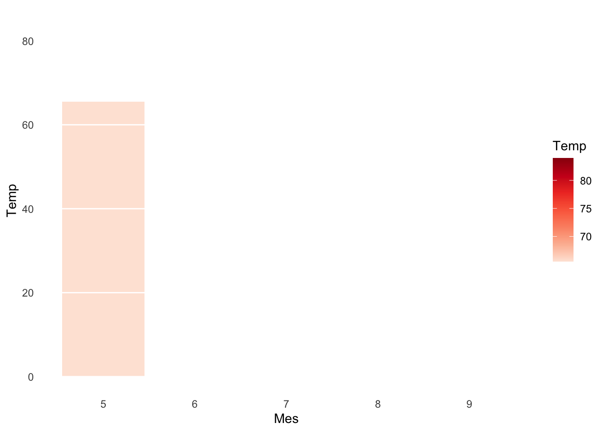

G15c_gganimate_barras
Raymond L. Tremblay
8/26/2021
library(tidyverse)## ── Attaching packages ─────────────────────────────────────── tidyverse 1.3.1 ──## ✓ ggplot2 3.3.5 ✓ purrr 0.3.4
## ✓ tibble 3.1.3 ✓ dplyr 1.0.7
## ✓ tidyr 1.1.3 ✓ stringr 1.4.0
## ✓ readr 2.0.0 ✓ forcats 0.5.1## ── Conflicts ────────────────────────────────────────── tidyverse_conflicts() ──
## x dplyr::filter() masks stats::filter()
## x dplyr::lag() masks stats::lag()library(gganimate)
library(rgl)
library(gapminder)
library(ggplot2)
library(animation)
library(gt)Usamos otro conjunto de datos del archivo airquality que se encuentra en el paquete datasets. Primero creamos un gráfico estático (sin animación), el día del mes (day), la temperatura del día (Temp) y una linea para cada mes (mayo a septiembre) con la función group.
Comenzamos con cambiar el nombre de algunas variables al castellano
names(airquality) # Nombres originales## [1] "Ozone" "Solar.R" "Wind" "Temp" "Month" "Day"names(airquality)[3] <- 'Viento'
names(airquality)[5] <- 'Mes'
names(airquality)[6] <- 'Día'
#names(airquality) # Nombres en castellano
calidad_aire=airquality
head(calidad_aire)## Ozone Solar.R Viento Temp Mes Día
## 1 41 190 7.4 67 5 1
## 2 36 118 8.0 72 5 2
## 3 12 149 12.6 74 5 3
## 4 18 313 11.5 62 5 4
## 5 NA NA 14.3 56 5 5
## 6 28 NA 14.9 66 5 6Animación con gráficos de barras
La transiciones también pueden ser producida con otros geoms por ejemplo con geom_col. El primer paso es tener un data frame que representa los valores de cada columna/barra. Entonces el primer paso aquí fue de calcular el promedio de temperatura por mes en un nuevo data frame que llamamos temp.promedio.
Preparación de los datos
names(calidad_aire)## [1] "Ozone" "Solar.R" "Viento" "Temp" "Mes" "Día"temp.promedio2 <- calidad_aire %>%
dplyr::select(Mes, Temp) %>%
dplyr::group_by(Mes) %>%
summarise(Temp = mean( Temp))
temp.promedio2## # A tibble: 5 × 2
## Mes Temp
## <int> <dbl>
## 1 5 65.5
## 2 6 79.1
## 3 7 83.9
## 4 8 84.0
## 5 9 76.9Gráfico de barra estático
Ahora creamos un gráfico estático de los datos con geom_col.
library(ggplot2)
s=temp.promedio2 %>%
dplyr::select(Mes, Temp) %>%
ggplot(aes(Mes, Temp, fill = Temp)) +
geom_col() +
scale_fill_distiller(palette = "Reds", direction = 1) +
theme_minimal() +
theme(
panel.grid = element_blank(),
panel.grid.major.y = element_line(color = "white"),
panel.ontop = TRUE
)
s
Añadiendo efecto de transición en las columnas
El efecto de transición de un mes al otro se añade con la función transition_states(). Si uno añade solamente esta función aparece solamente una barra a la vez.
s + transition_states( Mes, wrap = FALSE) 
Añadiendo efecto de transición y shadow o sea una sombra
s + transition_states( Mes, wrap = FALSE) +
shadow_mark()
Para más ejemplos de como usar gganimate ves este enlace https://semba-blog.netlify.com/10/29/2018/animating-oceanographic-data-in-r-with-ggplot2-and-gganimate/